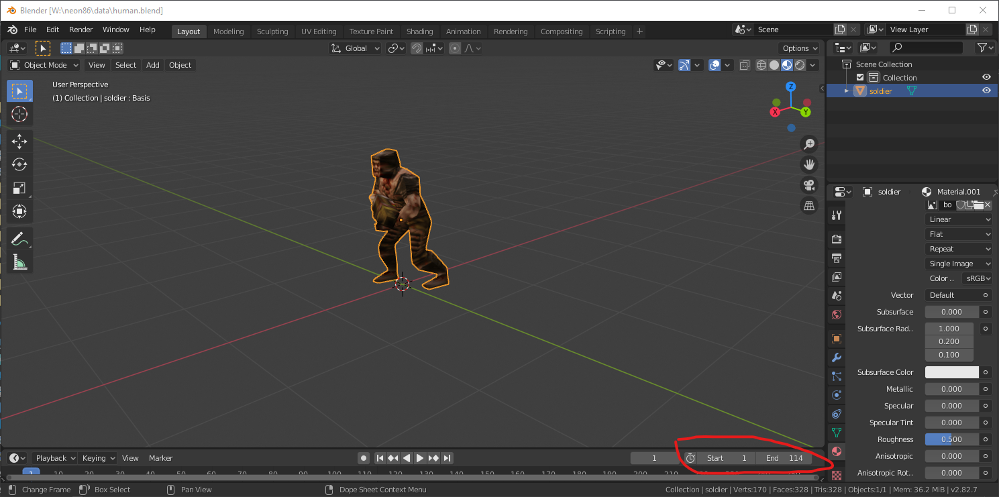
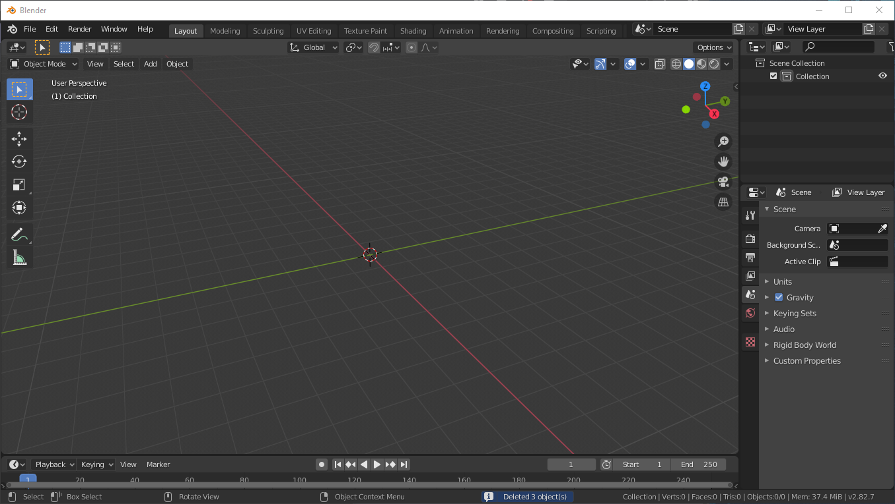
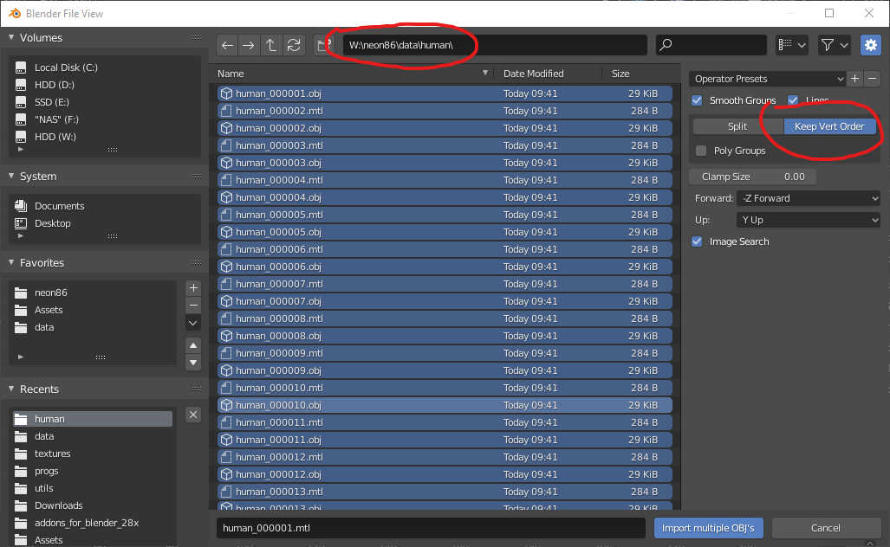
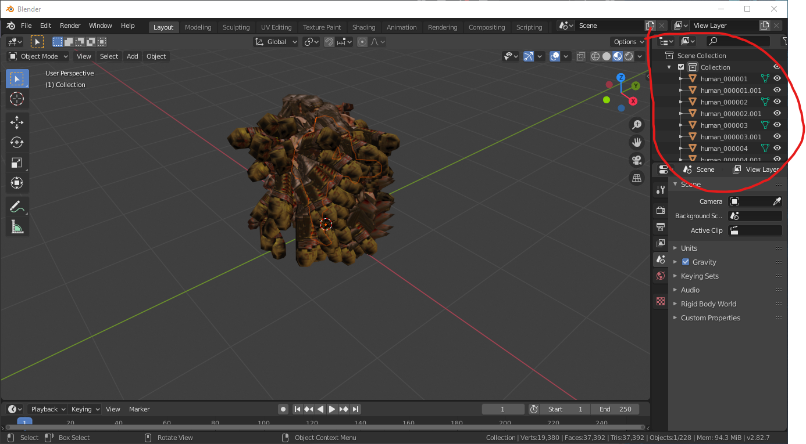
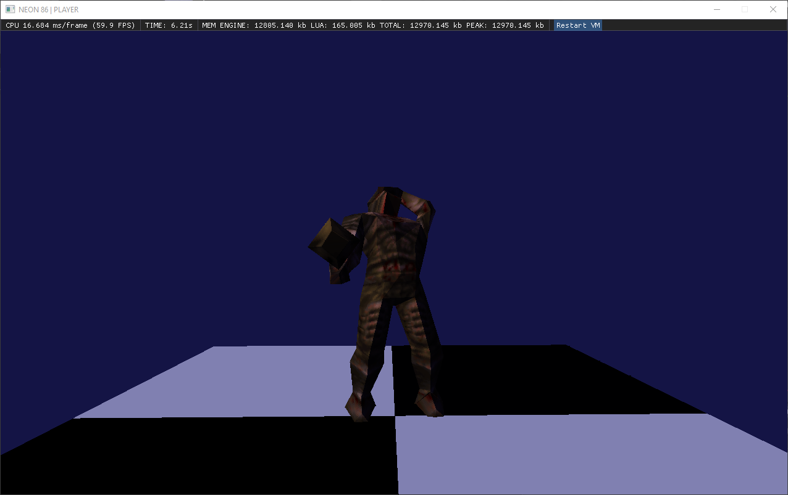

NEON allows you to load any kind of models (that are backed by Assimp library). One of the cool uses is to load a sequence of meshes (baked from keyframes) to import an animated mesh.
This tutorial provides basic walkthrough on how to export an animated FBX model and load it in NEON.
First, make sure your model has timeline we can export. Usually, Blender models make use of actions to specify animation states. This guide however is only focused on exporting one action per model.
Don't forget the timeline is the main factor of how many frames will get exported to individual OBJ models. Set timeline frame end appropriately. OBJ exporter ignores frame skipping, adjust your keyframe spacing as well!

Export your model to Wavefront OBJ, make sure to tick the Animation option and create a temporary folder we will export to.
At this point we should end up with the folder being populated with a sequence of models exported per each frame in our timeline. While we could already load these into NEON and animate, this is not an ideal solution.
We will use the batch OBJ importer plugin to import all frames into an empty scene:

Our scene will get populated by individual meshes representing each frame of our exported animation.

This is the result of our OBJ import:

What we need to do now is to export the whole scene as an FBX model, don't forget to adjust the exporter scale to 0.01. The result is a single FBX model containing all our individual frames baked into meshes.

We can load the model with the following LUA snippet:
human = Model("human.fbx")
humanFrames = human:getMeshes()
humanFrame = 1
humanCounter = 1 function drawHuman(wmat)
human:drawSubset(humanFrame, wmat) if humanCounter == 6 then
humanFrame = humanFrame + 1 if humanFrame >= #humanFrames then
humanFrame = 1
end
humanCounter = 0
end humanCounter = humanCounter + 1
endThis snippet will load our model and provide a function to draw a specific mesh within. It also provides a very basic animation playback looping over all the frames.
